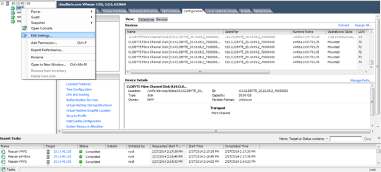
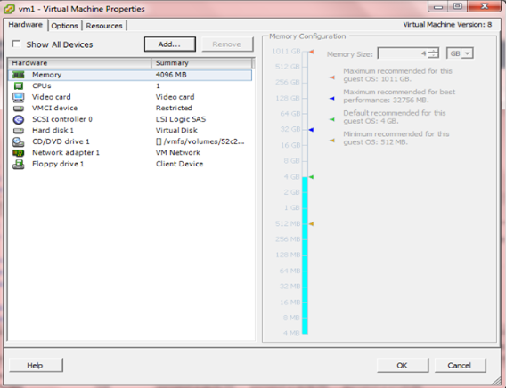
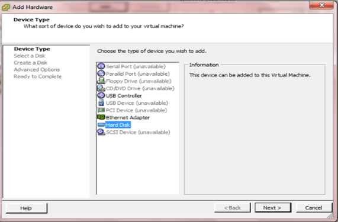

Mapping FC LUN to the clients
Note: Do not present the same LUN to multiple clients/initiators until an OS Clustering (for example, Red Hat Cluster Suite (RHCS) or Microsoft Cluster Server (MSCS)) uses the shared LUN.
On VMware vSphere client
- Ensure that you have enabled FC for the particular Storage Volume. For details, see "Configuring Fibre Channel (FC) protocol options ".
- In the vSphere Client, go to Configuration > Storage.
- Click Devices and then select Rescan All.
 from CloudByte ElastiStor-1.jpg)
- In the Rescan dialog box, click OK. The refreshed list of devices appears.
- Click Datastore.
- In the datastore list, select the datastore and then click Add Storage.
 from CloudByte ElastiStor-3.jpg)
The Add Storage wizard appears.Follow the instructions on the Wizard and then complete the procedures to add storage.
 from CloudByte ElastiStor-4.jpg)
Mapping FC LUN on Windows Server 2008
Discovering the FC target
Note: The mapping procedures are similar for other versions of Windows Server. However, there might be minor variations owing to the differences in UI strings and navigation.
Note: Microsoft Multipath I/O (MPIO) takes care of presenting a pseudo device.
- Ensure that you have enabled FC for the particular Storage Volume. For details, see "Configuring Fibre Channel (FC) protocol options ".
- On Windows Server 2008, select Server Manager > Disk Management > Rescan Disks.
 from CloudByte ElastiStor-5.png)
After rescan, the Volumes that you have created for FC are discovered.
 from CloudByte ElastiStor-6.png)
- Right-click the unallocated space and then click Online.
- Once online, right-click and then select Initialize Disk.
 from CloudByte ElastiStor-6.jpg)
- The Initialize Disk dialog box appears.
- Click OK.
- Right-click the unallocated space and then select New Simple Volume as shown in the following screen:
 from CloudByte ElastiStor-7.jpg)
- The New Simple Volume Wizard appears.
- Follow the instructions and complete the wizard to create the partition.
- Ensure that the created disk is added to the Disk management console (indicated by the blue ribbon).
 from CloudByte ElastiStor-10.jpg)
- Ensure that the drive created out of FC LUN is shown (as in) the following screen:
 from CloudByte ElastiStor-11.png)
Mapping FC LUN as a raw disk
- On the Windows Virtual Machine, right-click and then select Edit Settings.

- In the Virtual Machine Properties page, click Add.

- Select Hard Disk as the device type and then click Next.

- Select Raw device mappings and then click Next.
- From the list of LUNs, select a LUN which has to be mapped as a raw device.
- Follow the wizard and complete the procedures.
- When the Raw mapped LUN message appears, click OK.
On Kernel-based Virtual Machine
- Do either of the following:
- As root, make an SSH connection to the KVM client.
- On the KVM client, log in as root.
- At command prompt, do the following to map FC LUN to KVM.
- Run the following command to verify the number of FC Hosts:
ls /sys/class/fc_host/
The following is a sample output:host0 host1 host2 ..........hostX
- Run the following command to discover the FC LUNs:
echo "1" >/sys/class/fc_host/hostHBA number/issue_lip
For example,echo "1" >/sys/class/fc_host/host7/issue_lip
- Repeat the step 4 for all the FC Hosts.
- Run the following command to fetch the WWPN of the FC Host:
cat /sys/class/fc_host/host<HBA number>/port_name
For example,cat /sys/class/fc_host/host7/port_name
- Run the following command to add each FC LUN as a device to the KVM client:
echo "scsi add-single-device h c t l" > /proc/scsi/scsi
- Run the following command to to list the disks:
fdisk -l
Note: The number that follows host(1, 2, or X) is the HBA number of the FC Host.
| Parameter | Description |
| h | HBA number of the Host. |
| c | Channel ID on the HBA. |
| t | SCSI target ID. |
| l | FC LUN ID. |